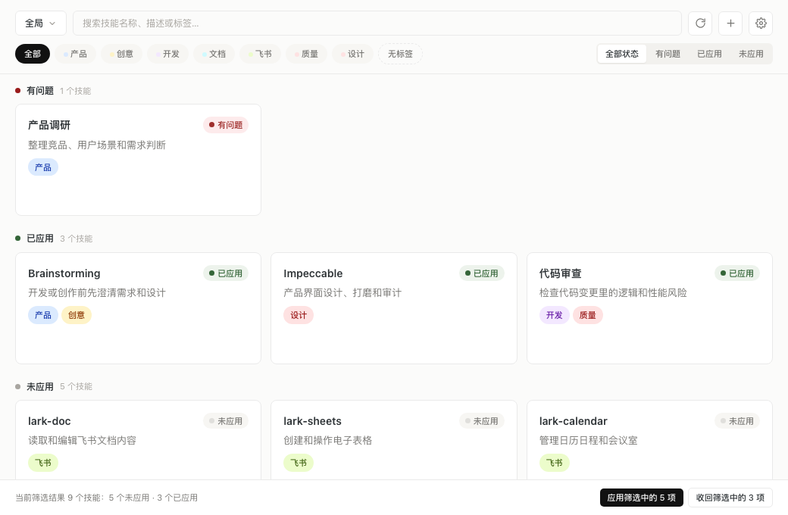
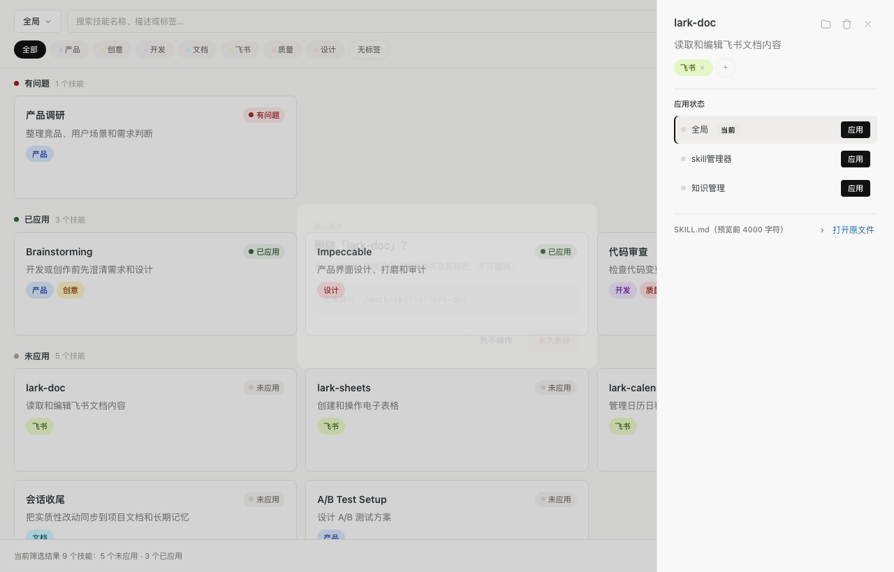
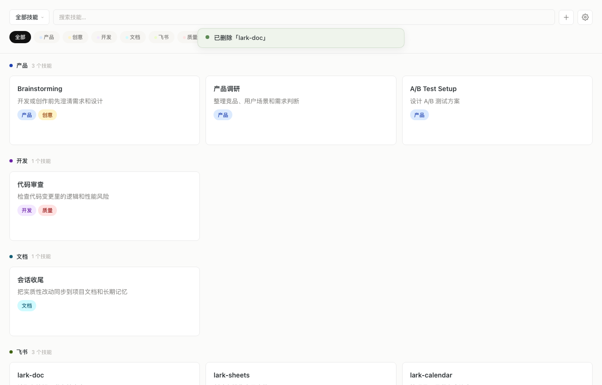
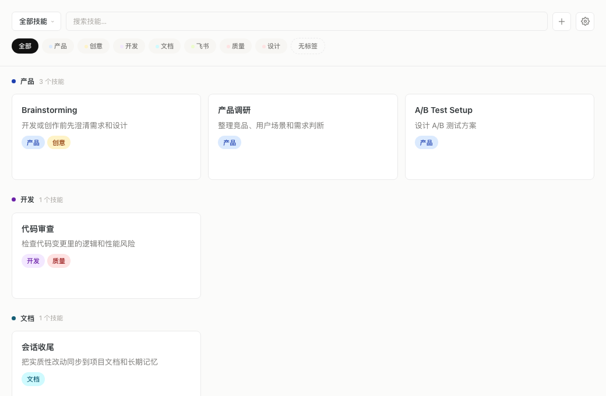
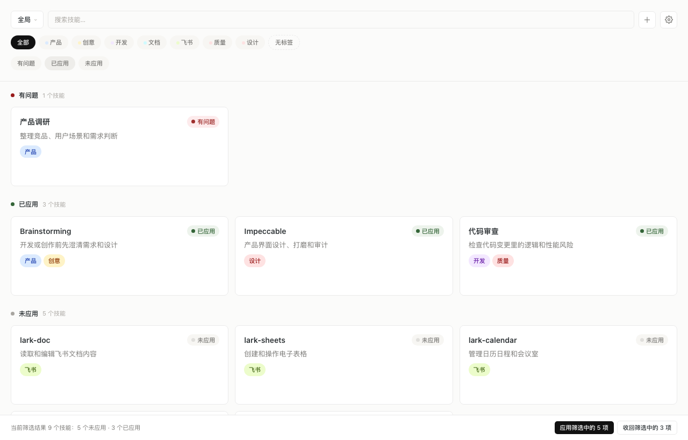
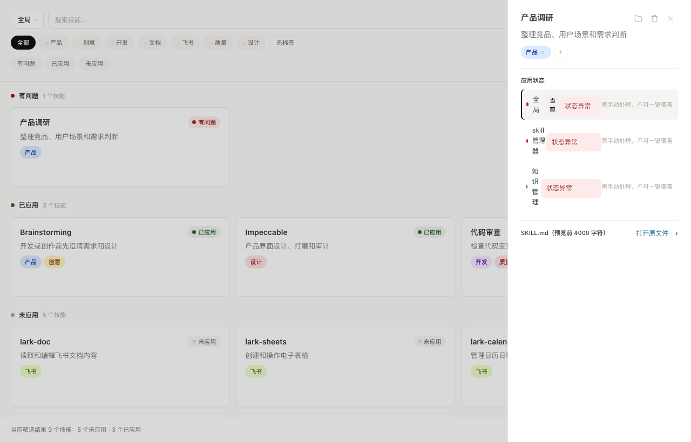

整体工程质量不错：自动化测试全部通过，分发安全规则（默认不覆盖、冲突单独确认、内容指纹校验）设计得很扎实。但审查发现 1 个已复现的误删数据缺陷，需要在下一次发版前修复；另有几处会让用户“以为成功其实没成功”或“界面卡住”的问题。
20 条问题已全部在代码中修复，并重新打包。下表“验证”一列说明每条修复是用什么方式确认的。
| 编号 | 怎么修的 | 验证 |
|---|---|---|
| P0-1 | 删除改用应用内确认框；仍有启用位置时只提示、不给删除按钮 | 4 条交互测试；变异测试确认把旧写法放回去时这些测试会失败；浏览器实测取消后技能仍在 |
| P0-2 | 抽屉与卡片共用同一个收回函数，按后端报告决定提示色调 | 2 条交互测试（失败显示红色、成功显示绿色） |
| S1 | 21 个后端命令全部改为后台线程执行 | 36 条后端测试通过；已核对 Tauri 宏源码中该属性的调度方式 |
| S2 | 所有写操作统一套失败兜底；拖拽排序失败时恢复原顺序 | 交互测试：标签保存失败时出现持久错误条 |
| S3 | 批量结果记住操作类型，重试沿用；按钮文案写明“重试收回 / 重试应用” | 交互测试：收回失败后重试只调用收回，不调用应用 |
| S4 | 读取状态时不再写数据库；部署快照写入改为单事务，仅测试保留 | 后端测试用数据库版本号确认 3 次读取零写入，并用对照测试证明探针有效 |
| I1 | 卡片可 Tab 聚焦、Enter 打开；下拉带展开状态和键盘导航 | 交互测试 + 浏览器实测 |
| I2 | 窗口重新获得焦点时静默刷新；顶栏新增刷新按钮，支持 ⌘R | 2 条交互测试 |
| I3 | 处理中状态改为可渲染的集合，键名统一，按钮显示“应用中…” | 代码审查 + 原有防双击测试 |
| I4 | 批量全部成功只弹绿色提示；部分失败才显示黄色或红色面板 | 交互测试 + 单元测试 |
| I5 | 标签栏“全部”只清标签；状态改为分段控件，新增“全部状态” | 交互测试 + 浏览器实测 |
| V1 | 状态筛选并入标签行，工具栏收紧：顶部从 114px 降到 98px | 1040×680 下首屏完整卡片从 4 张升到 5 张（目标视角 7 张），三种尺寸均无横向溢出 |
| V2 | 下拉箭头换成 SVG，展开时旋转 | 浏览器截图 |
| V3 | 错误条、批量结果、横幅移入工具栏下方的文档流，纵向排列不重叠 | 浏览器截图 + 样式审查 |
| F1 | 失效目标在下拉和设置中标注“路径不存在”；选中时显示横幅并禁用应用 | 交互测试 |
| F2 | 后端新增可覆盖字段（仅冲突和失效为真），卡片与抽屉共用 | 2 条后端测试 + 交互测试 + 适配层测试 |
| F3 | 搜索匹配标签名；重复添加目标会报“该目标已存在” | 后端 2 条测试 + 单元测试 + 交互测试 |
| E1 | 恢复文件确认是旧草稿后加入 .gitignore；提交由你操作 | 逐行对比恢复文件与现有测试 |
| E2 | AGENTS / DESIGN / PRODUCT / README 已与代码同步 | 人工核对 |
| E3 | 合并重复的应用逻辑，焦点循环抽成共用 hook，清理死代码与死样式 | 类型检查 + 全部测试 |


安全规则设计得对，但有一处关键交互没落实到真实运行环境里。先修 P0，再处理“反馈不真实”和“界面卡住”这两类 P1 问题。
最值得关注的发现：在打包好的 App 里删除技能时，系统弹出的确认框还没等用户选择，删除就已经执行了。用户点“取消”也照样会删。我在浏览器中按 App 的真实运行方式模拟了这一行为并复现成功（见 P0-1）。
原因（通俗版）：代码把确认框当成“会停下来等用户回答”来写，但在 Tauri 这个桌面框架里，确认框是“先放行、稍后才回答”。代码拿到的不是“是/否”，而是一张“待会儿告诉你”的回执，回执本身被当成了“是”。
好消息：技能还有已启用位置时，后端会拒绝删除，所以误删只会发生在“当前没有应用到任何目标”的技能上。但主库是唯一事实源，删了就没了。
这两条都可能让用户丢失数据或做出错误判断，建议发下一个测试版之前修完。
已删除「lark-doc」，卡片消失。src/App.tsx:1106 写的是 if (!confirm(...)) return;。dialog 插件 2.7.1 会在启动时把 window.confirm 换成异步函数（插件源码 guest-js/init.ts:14，作者注释直说“tauri does not have sync IPC”）。异步函数返回的是 Promise 对象，取反永远为假，所以删除总会继续执行。plugin:dialog|confirm 命令在 2.7.1 中并不存在（只有 open / save / message），项目权限也只开了 open。换句话说，这个系统确认框在当前 App 里本来就无法正常工作。confirm 是同步的；而且 28 个测试里没有一个覆盖删除路径。ConfirmDialog（批量操作、覆盖都已经在用），风格也能统一。删除确认里写清“会从主库永久移除，不可撤销”。顺手补一条删除路径的交互测试。
已收回「xxx」。src/App.tsx:1160-1168 丢弃了 withdrawSkill 的返回报告。而后端在“目标位置不是指向主库的软链接”时不会抛错，只会在报告的 errors 里写一条“未改动”（commands.rs:530）。explainReport(report) 决定提示色调和文案；刷新失败时显示“状态暂未核对”横幅。共 20 条，按优先级排列。“成本”指大致代码改动量：小 < 半天，中 0.5–2 天，大 > 2 天。
| 编号 | 级别 | 维度 | 问题 | 成本 | 位置 |
|---|---|---|---|---|---|
| P0-1 | P0 | 稳定性 | 删除确认不等待，点取消也会删 | 小 | 详情 |
| P0-2 | P0 | 功能 | 抽屉“收回”失败也提示成功 | 小 | 详情 |
| S1 | P1 | 稳定性 | 所有后端命令在主线程同步执行，扫描或计算指纹时整个窗口卡住 | 小 | 详情 |
| S2 | P1 | 稳定性 | 8 个写操作没有失败兜底，出错时静默无反馈 | 小 | 详情 |
| S3 | P1 | 稳定性 | “重试失败项”固定按“应用”重试，收回失败时会反向执行 | 小 | 详情 |
| S4 | P1 | 稳定性 | 每次读取状态都清空重写部署快照表，且没有事务 | 小 | 详情 |
| I1 | P1 | 交互 | 技能卡片无法用键盘聚焦，键盘用户打不开详情 | 小 | 详情 |
| I2 | P1 | 交互 | App 外部改动不会自动刷新，也没有手动刷新入口 | 小 | 详情 |
| F1 | P1 | 功能 | 目标“项目根目录不存在”在界面上没有任何提示 | 中 | 详情 |
| F2 | P1 | 功能 | 抽屉的“覆盖”按钮永远不出现，卡片的“覆盖”却对所有问题都出现，两处规则相反 | 小 | 详情 |
| I3 | P2 | 交互 | 卡片按钮的“处理中”禁用永远不生效 | 小 | 详情 |
| I4 | P2 | 交互 | 批量结果面板全成功时也用红色错误样式 | 小 | 详情 |
| I5 | P2 | 交互 | 标签筛选“全部”会顺带清掉状态筛选 | 小 | 详情 |
| V1 | P2 | 视觉 | 顶部区域在 680px 高窗口下占 24%，首屏只看得到 4 张卡 | 中 | 详情 |
| V2 | P2 | 视觉 | 目标下拉箭头用“‹”字符旋转，展开态无变化 | 小 | 详情 |
| V3 | P2 | 视觉 | 多个横幅和提示都钉在顶部 60px 处，同时出现会互相遮挡 | 中 | 详情 |
| F3 | P2 | 功能 | 搜索不匹配标签名；重复添加同一目标会静默覆盖 | 小 | 详情 |
| E1 | P2 | 工程 | 3800 行改动未提交，且有 .recovered 恢复文件残留 | 小 | 详情 |
| E2 | P2 | 工程 | AGENTS.md / DESIGN.md 与代码不一致 | 小 | 详情 |
| E3 | P2 | 工程 | App.tsx 单文件 2095 行，死代码与重复逻辑开始累积 | 中 | 详情 |
核心是两件事：别让界面卡住，别让失败无声无息。
get_app_state 每次都扫描主库和所有目标目录；覆盖前的 get_target_fingerprint 会遍历整个目录算哈希；批量操作每处理一个技能就调一次命令。目标放在 iCloud、网盘或外接盘时，卡顿会很明显。async fn，或标注 #[tauri::command(async)]。业务代码几乎不用动。App.tsx 第 360、369、1119、1546、1576、1582、1591、1601 行）。showError；拖拽失败时恢复原顺序。可以抽一个小工具函数，避免每处重复写 try/catch。App.tsx:771 写死了 runBatch(again, "deploy")，没有记住上一次是“应用”还是“收回”。storage.rs:653 的 persist_deployments 先 DELETE FROM deployments，再逐行插入，没有包在事务里。它由 load_app_state 调用，也就是说每次查看状态都会写数据库。app.db，读操作附带写操作会增加锁冲突的概率。整体流程清晰，确认框写清了影响范围，Esc 关闭和焦点循环也都做了。问题集中在键盘可达性和几处状态反馈。
div，没有 tabindex 和键盘事件（App.tsx:932）。实测从搜索框连按 4 次 Tab，焦点停在标签筛选上；卡片本身拿不到焦点。tabIndex={0}、role="button"、Enter / 空格打开详情，并加上 focus-visible 外框。deploy:${skill.id}（App.tsx:988），实际写入的键是 deploy:${skillId}:${targetId}（第 380 行），两者永远对不上。另外 busy 状态存在 ref 里，变化不会触发重新渲染。.inline-error-bar（红底，styles.css:2113），不论成功与否。App.tsx:629 的 onClick 同时执行 setActiveTag(null) 和 setStatusFilter(null)。标签和状态是两行独立的筛选，用户只想取消标签时，“只看有问题”的状态也被一起清除了。整体与 DESIGN.md 的“安静、可信的工作台”方向一致：暖白底、细边框、低饱和状态色，三种窗口尺寸下都没有横向溢出。问题主要在信息密度和提示层的堆叠。


App.tsx:583 用文本字符 ‹ 加 rotate(-90deg) 模拟下拉箭头；styles.css 里没有展开态样式。字符在不同字体下粗细和基线都不一致。aria-expanded，下拉项改成 button 元素，以便键盘和读屏软件识别。.toast 和 .inline-error-bar 都是 position:fixed; top:60px 水平居中（styles.css:1554 / 2113）。批量结果面板和普通错误条用的是同一个样式，同时出现时会完全重叠，正好盖住目标下拉和搜索框。导入预览勾选、冲突需显式确认、覆盖前比对内容指纹，这些安全机制在同类工具里属于少见的扎实。下面几条是“规则对了，但用户看不到或用不到”。

pathExists / targetExists / rootExists，前端 transform.ts 也接收了，但 App.tsx 中一次都没有使用。/冲突|失效|broken|conflict/ 匹配问题描述来决定是否显示覆盖按钮（App.tsx:1239）。但后端实际返回的文案是“目标位置已有同名内容”“软链接目标不存在”“目标位置已有指向别处的软链接”等（storage.rs:1020-1034），没有一个包含这些关键词。结果是抽屉里永远不出现覆盖按钮。App.tsx:994），包括“目标技能目录不存在”“无法读取”这类本不该一键覆盖的情况（后端会拒绝，但用户先得走完一次确认流程）。can_overwrite 布尔值传给前端，卡片和抽屉共用同一条规则。界面仍只展示 3 种状态，符合“不在 UI 展示 7 种细分状态”的约束。filterSkills 只匹配名称和描述（viewModel.ts:70-74）。输入“飞书”找不到带“飞书”标签但描述里没写这两个字的技能。建议把标签名纳入搜索。INSERT OR REPLACE（storage.rs:688）。重复添加同一路径不报错也不提示，用户不确定是否加成功。建议提示“该目标已存在”并在列表中高亮它。这部分不直接影响用户，但决定了后续修改会不会越改越乱。
.recovered-from-trajectory/ 恢复文件夹，dsh 插件目录也未提交。get_skill_content、get_target_fingerprint；技术栈写 Tauri 2.10.0，锁文件里实际是 2.11.2；“验证清单”没有提到已存在的 npm test 和 cargo test。statusDropdownOpen、导入后未使用的 reorderTag、viewModel 里未被调用的 summarizeBatch，以及对应的 .status-dropdown、.card-stat-text 样式。Rust 端 clippy 报告 2 条警告。按“先止损、再建立信任、最后打磨”分三批。每一批都可以单独发一个测试版。
完成标准：任何危险操作在“取消”时零副作用；任何失败都不出现绿色提示。
完成标准：在网盘目录下操作界面不假死；在 Finder 改完文件后切回 App 即可看到最新状态。
建议 E1 提前：在动手修第一批之前，先把现有改动提交一次，方便回退。
以下结论基于这些检查。没有覆盖到的部分如实列出。
| 检查项 | 方法 | 结果 |
|---|---|---|
| 前端构建 | npm run build（类型检查 + 打包） | 通过 JS 401KB / gzip 123KB |
| 前端测试 | npm test（vitest）+ test:adapter | 28 + 7 通过 |
| 后端测试 | cargo test | 30 通过 |
| 后端静态检查 | cargo clippy --all-targets | 2 条警告 无错误 |
| 界面走查 | 模拟数据下用无头浏览器截图 14 个状态，覆盖 1040×680 / 1280×820 / 1440×900 | 三种尺寸均无横向溢出 |
| P0-1 复现 | 按 dialog 插件 2.7.1 源码注入异步 confirm 并返回“取消” | 复现成功 |
| 依赖行为核对 | 直接阅读本机 cargo 缓存中的 tauri 2.11.2、tauri-plugin-dialog 2.7.1、wry 0.55.1 源码 | 结论均有源码出处 |
影子.app 做删除测试。P0-1 是按插件源码在浏览器中等价复现的，建议修复后在隔离测试 App（YINGZI_TEST_HOME）中再确认一次。~/.skills-manager 和 ~/.agents/skills。